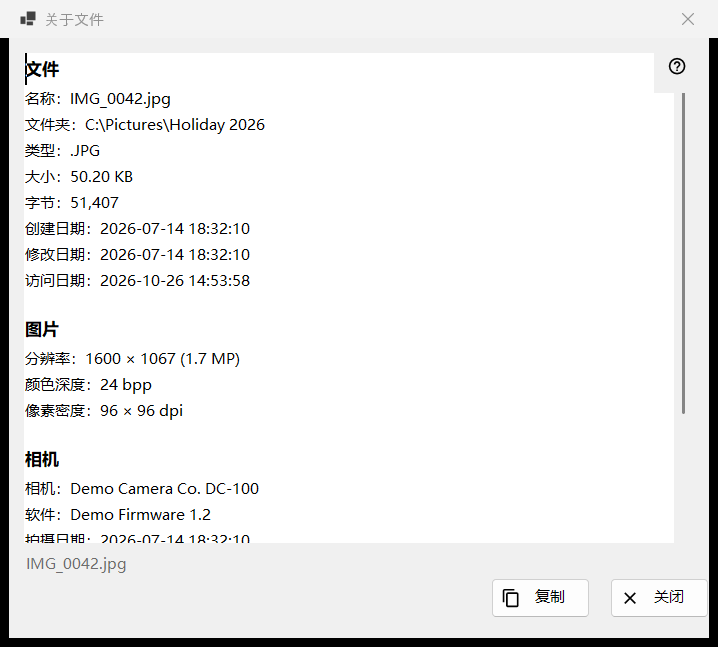
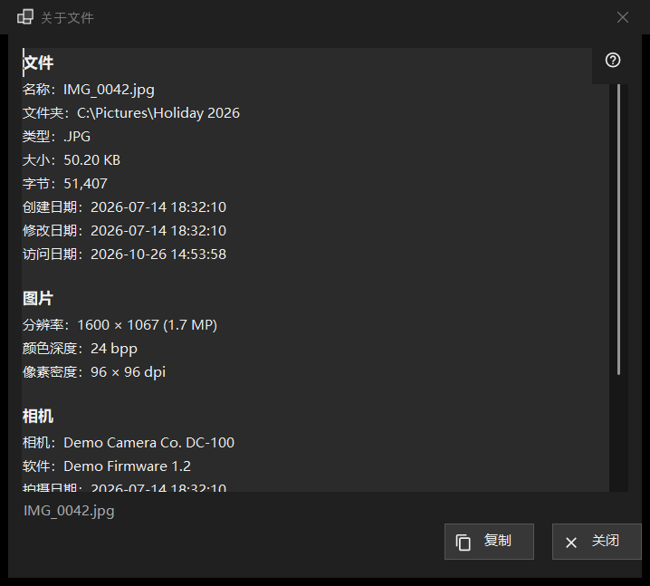

关于文件
用途说明
只读的快照，显示程序对屏幕上这个文件所知道的信息：文件本身、带相机数据的图片、文档，以及音频和视频轨道。从第一个面板的 i 项，或查看器菜单文件区块中的「关于文件」打开，描述的是点击那一刻文件的状态。


操作顺序
- 在查看器中显示一个文件。
- 点击第一个面板的 i 项，或在菜单中选择「关于文件」。
- 稍等片刻：状态栏显示「正在读取文件元数据..」，各行随后填入。
- 阅读各个区块，选中需要的内容，点击「复制」把全部文本放入剪贴板。
- 点击「关闭」或按 Esc。
界面元素
文件
每个文件都有这个区块：名称、文件夹、类型、大小、字节、创建日期、修改日期、访问日期和属性。没有内容可显示的行会被省略。如果没有打开任何文件，状态栏显示「未选择文件」；压缩包中的临时副本、远程地址或已经消失的文件会显示「文件不可用」，并且不会打开窗口。
图片
对于图片：按显示方式给出的分辨率（手机横置存储的照片按正立后的尺寸读取）、颜色深度和像素密度，前提是文件记录了它们。
相机
读取自照片的 EXIF 数据：相机、软件、拍摄日期、曝光时间、光圈、ISO、焦距和作者。只有照片带有 GPS 数据时才会出现坐标，「复制」也会包含坐标，所以分享之前请检查文本。
文档
对于文本文件：行数、词数、字符数和编码，文件过大无法完整读取时还会显示「仅读取了文件的一部分」。对于电子书：名称和作者。对于 PDF：页数。
媒体、视频与音频
对于音频和视频文件，标签（名称、艺术家、专辑、年份、曲目、流派、导演、剧集、季、集、时长）以及每种类型的第一条轨道（视频：分辨率、每秒帧数、编解码器、比特率；音频：编解码器、声道、采样率、比特率）会在媒体引擎读完之后，比其余内容稍晚一点加入。窗口从不为此等待。网络流没有轨道行。
复制与关闭
「复制」把全部文本放入剪贴板，状态栏显示「已复制到剪贴板」；如果另一个程序占用着剪贴板，状态栏会这样提示，您可以再次点击「复制」。用 Ctrl+C 复制选中的内容同样有效。如果什么都没能读取，文本框中显示「无法读取文件信息。」按钮旁边的状态栏显示文件名。切换到另一个文件不会改变这个窗口：要查看新文件，请再次点击 i。